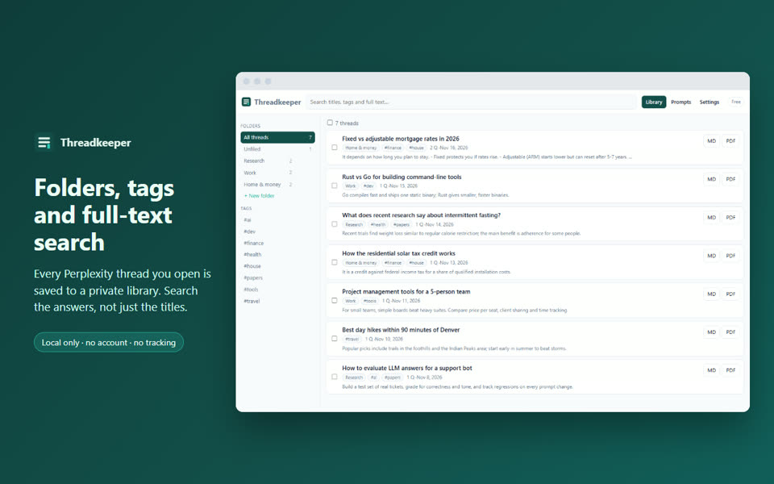
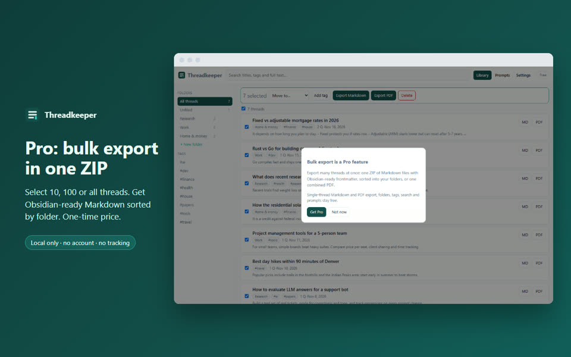

Find any Perplexity answer again
Threadkeeper is a free Chrome extension that saves the Perplexity threads you open into a private library on your computer. File them into folders and tags, search the full text of every answer, and export to Markdown or PDF.
Add Threadkeeper to Chrome, free

What you get for free
- Folders and tags for your threads, set from a small button on Perplexity or in bulk in the library.
- Full-text search across titles, tags and the full text of every saved question and answer.
- Export a whole thread to Markdown or PDF, with sources kept as links.
- Prompt library: save prompts you reuse and insert them in one click.
- Backup and restore your whole library as one JSON file.
Pro: $19 once, not a subscription
Bulk export: pick 10, 100 or all saved threads and get one ZIP of Obsidian-ready Markdown sorted by folder, or one combined PDF.

Private by design
Everything stays in your browser's local storage. No account, no server, no analytics. It only runs on perplexity.ai (and on ExtensionPay's checkout page if you buy Pro). Read the privacy policy.
Guides
- How to export a Perplexity thread to Markdown or PDF
- How to organize Perplexity threads into folders
- How to find an old Perplexity answer
- How to save Perplexity threads to Obsidian
- How to back up your Perplexity threads
Add Threadkeeper to Chrome, free
FAQ
Is Threadkeeper free?
Yes. Folders, tags, full-text search, single-thread Markdown and PDF export, the prompt library and backups are free. Pro ($19 one-time) adds bulk export of many threads at once.
Does it import my whole Perplexity history?
It saves each thread when you open it on perplexity.ai. To add older threads, open them once from your Perplexity library and they are saved.
Where is my data stored?
Only in your browser's local extension storage on your computer. Nothing is sent to Little Lamp Software or anyone else.
Is it made by Perplexity?
No. Threadkeeper is an independent extension by Little Lamp Software.